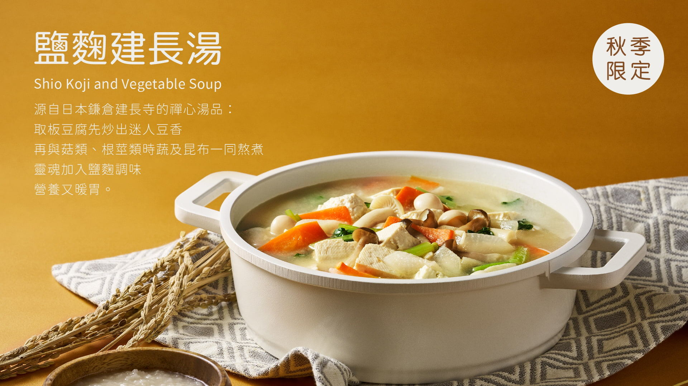
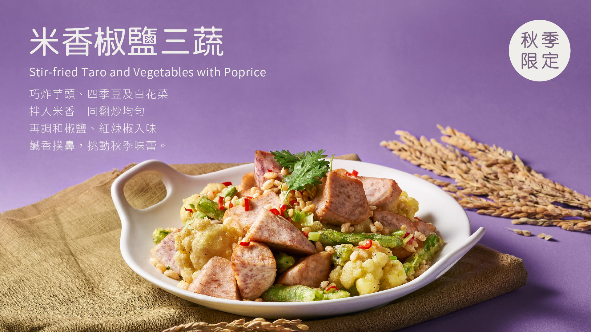

果然匯 「果然匯」提倡蔬食機能餐飲：以國際料理為舞台、本地食材為主角。匯集豐富蔬果及自然食材，透過多國料理方式，用好滋味照顧每位顧客及這片土地。來一趟果然匯，世界蔬食盡收眼底。
◎榮獲CNN介紹：世界十大素食城市—「台北」之代表餐廳。
從天然「原形食材」出發，減少使用素食加工品。並遵循「不時不食」的精神，以當令新鮮蔬果入菜。嚴選原料結合鮮製手作，超過百道多國料理，吃出各式食材自然風味，顛覆對蔬食的想像！
◎餐點菜牌上皆清楚標示「素別」：全素、含蛋、含奶、五辛等，及「特殊食材」：酒類、堅果等，不同類型素食者可依自身需求選用。
「饗賓餐旅集團」堅持提供給顧客健康、安心的餐點，成立「饗農班」和當地優質的生產者合作，各式蔬果新鮮直送，確保品質及穩定貨源。並定期進行安全檢驗追蹤，排除蔬果農藥超標或病蟲害之疑慮。我們嚴謹於每一處細節，果然會讓您放心！
高雄夢時代店｜Kaohsiung Dream Mall 3F 高雄市前鎮區中華五路789號3樓（夢時代購物中心）
高雄夢時代地圖07-831-9777
| 鹽麴建長湯｜ 取板豆腐先炒出迷人豆香 再與菇類、根莖時蔬及昆布熬煮 靈魂加入鹽麴調味，營養又暖胃。 | 米香椒鹽三蔬｜酒 巧炸芋頭、四季豆及白花菜 拌入米香翻炒均勻，再調和椒鹽、紅辣椒入味 鹹香撲鼻，挑動秋季味蕾。 |
|  |  |